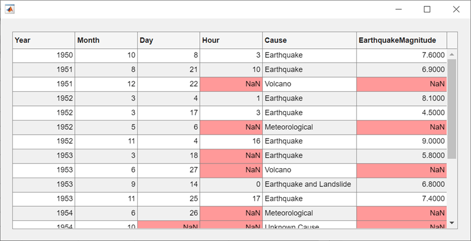

uitable
Create table user interface component
Description
uit = uitableTable UI component object. If
there is no figure available, MATLAB® calls the figure function to create one.
uit = uitable(parent)Figure object or a child container such as a panel.
uit = uitable(___,Name,Value)
Examples
Create a table UI component that displays a 10-by-3 array of random integers.
fig = uifigure;
uit = uitable(fig,"Data",randi(100,10,3));
Create a table array t with different data types by reading data from a file. Select the first 15 rows of four variables from t.
t = readtable("patients.xls"); vars = ["Age","Systolic","Diastolic","Smoker"]; t = t(1:15,vars);
Create a table UI component to display the tabular data. The data type determines how the data appears in the component. For example, logical data displays as a check box. For more information, see Format Tabular Data in Apps.
fig = uifigure; uit = uitable(fig,"Data",t,"Position",[20 20 350 300]);

Display and programmatically update data in a table UI component.
Create a table array by reading in tsunami data from a file, and display a subset of the data in a table UI component.
t = readtable("tsunamis.xlsx"); vars = ["Year","MaxHeight","Validity"]; t = t(1:20,vars); fig = uifigure; uit = uitable(fig,"Data",t);

Update the validity of the tsunami in the first row by editing the Data property of the table UI component.
uit.Data.Validity(1) = {'definite tsunami'};
Convert the maximum height data from meters to feet by accessing and modifying the data in the MaxHeight variable.
uit.Data.MaxHeight = uit.Data.MaxHeight*3.281;

Create an app that allows users to sort and edit table data, and that updates a data visualization when data is changed.
In a file named tableDataApp.m, write a function that implements the app:
Create a
tablearray of tsunami data.Create a UI figure with a grid layout manager.
Create a sortable and editable table UI component in the figure. Store the
tablearray in the componentDataproperty.Create a bubble chart to visualize the tsunami data, where the coordinates of a bubble represent the latitude and longitude of the tsunami and the size of the bubble represents the maximum height.
Update the bubble chart when the app user sorts columns or edits cells in the table UI component by writing a
DisplayDataChangedFcncallback. For more information about callbacks, see Create Callbacks for Apps Created Programmatically.
function tableDataApp % Create table array t = readtable("tsunamis.xlsx"); vars = ["Latitude","Longitude","MaxHeight"]; t = t(1:20,vars); % Create UI figure fig = uifigure; fig.Position(3:4) = [722 360]; gl = uigridlayout(fig,[1 2]); % Create table UI component uit = uitable(gl); uit.Data = t; uit.ColumnSortable = true; uit.ColumnEditable = [false false true]; % Create bubble chart ax = geoaxes(gl); lat = t.Latitude; long = t.Longitude; sz = t.MaxHeight; bubblechart(ax,lat,long,sz) % Specify table callback uit.DisplayDataChangedFcn = @(src,event) updatePlot(src,ax); end function updatePlot(src,ax) t = src.DisplayData; lat = t.Latitude; long = t.Longitude; sz = t.MaxHeight; bubblechart(ax,lat,long,sz) end
Run the app.
tableDataApp

A sortable column displays arrows in the header when you point to it. Sort the table by the maximum height of the tsunamis.

Edit the maximum height of the tsunami in the second row to be 30 meters by double-clicking the table cell and entering the new height. The bubble chart updates in response.

Style rows, columns, or cells of a table UI component using
the uistyle and addStyle functions.
Read tsunami sample data into the workspace as a table array. Then, create a table UI component to display the data.
tdata = readtable("tsunamis.xlsx"); vars = ["Year","Month","Day","Hour", ... "Cause","EarthquakeMagnitude"]; tdata = tdata(1:20,vars); fig = uifigure("Position",[500 500 760 360]); uit = uitable(fig, ... "Data",tdata, ... "Position",[20 20 720 320]);
Use the ismissing function to get a logical array of
the table elements that contain missing values. Find the row and column
subscripts for the elements that have NaN values.
Finally, create a red background color style and add it to the cells in the
table with NaN.
styleIndices = ismissing(tdata); [row,col] = find(styleIndices); s = uistyle("BackgroundColor",[1 0.6 0.6]); addStyle(uit,s,"cell",[row,col]);

Create an app that plots data on a map when the app user selects the data in a table.
In a file named selectTsunamis.m, write a function that implements the app:
Load the tsunami data.
Create a UI figure with a table UI component and a geographic bubble chart in a grid layout manager.
Configure the table UI component. Store the tsunami data in the
Dataproperty, and let users select multiple rows by setting theSelectionTypeandMultiselectproperties.Specify a
SelectionChangedFcncallback that updates the bubble chart when the app user changes the table selection. TheplotTsunamicallback function plots a bubble for each selected row, where the size of the bubble represents the maximum tsunami height. For more information about callbacks, see Create Callbacks for Apps Created Programmatically.
function selectTsunamis % Load data t = readtable("tsunamis.xlsx"); vars = ["Latitude","Longitude","MaxHeight"]; t = t(1:20,vars); % Create UI components fig = uifigure("Position",[100 100 800 350]); gl = uigridlayout(fig,[1 2]); gl.ColumnWidth = {'1x','2x'}; tbl = uitable(gl); gb = geobubble(gl,[],[]); % Configure table tbl.Data = t; tbl.SelectionType = "row"; tbl.Multiselect = "on"; tbl.SelectionChangedFcn = @(src,event) plotTsunami(src,event,gb); end % Plot tsunami data for each selected row function plotTsunami(src,event,gb) rows = event.Selection; data = src.Data(rows,:); gb.LatitudeData = data.Latitude; gb.LongitudeData = data.Longitude; gb.SizeData = data.MaxHeight; end
Run the app.
selectTsunamis

Select multiple table rows by holding Ctrl while clicking. The plot updates with the selected tsunami data.

Since R2021a
Programmatically scroll to a row, column, or cell of a table
UI component using the scroll function.
Read sample patient data into the workspace as a table array. Then, create a table UI component to display the data.
tdata = readtable("patients.xls"); vars = ["Age","Systolic","Diastolic","Smoker"]; tdata = tdata(1:40,vars); fig = uifigure; uit = uitable(fig,"Data",tdata); uit.RowName = "numbered";

Scroll to the 25th row of the table.
scroll(uit,"row",25)